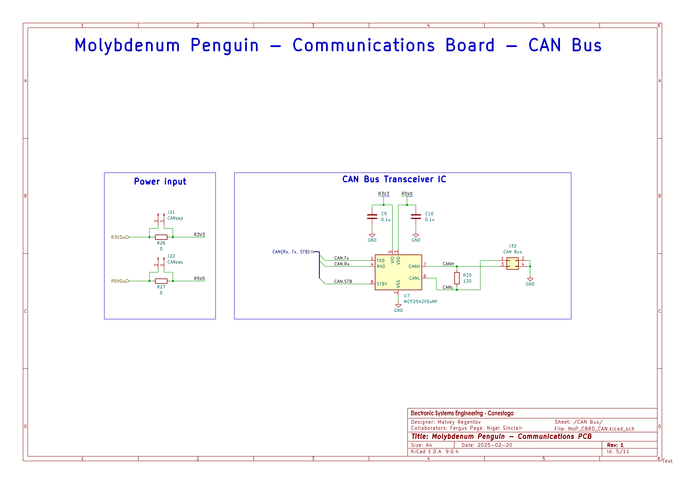
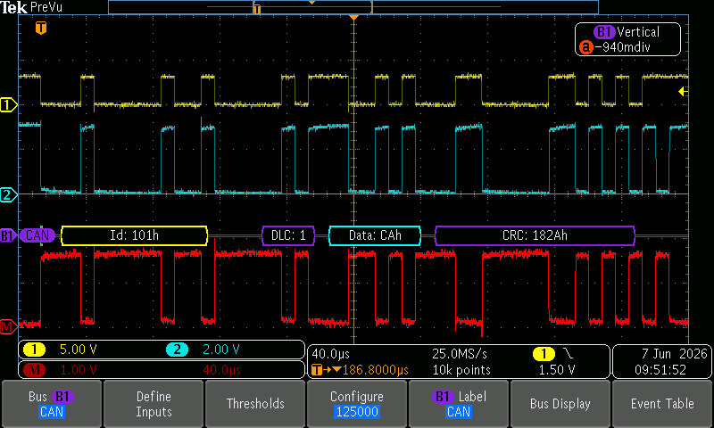

Team meeting and debrief
My logbook cover pageMolybdenum Penguin (MoP) PCBs were created as part of Engineering Project 4 and used in Nickel Lobster (NiL), Engineering Project 5. Communications PCB implements a CAN transceiver module which can be used to test 2-way CAN communication for LiF project. However, pinout of the MoP Comms PCB does not match the pinout required for the Nucleo Elevator Shield. As such, PB8 and PB9 are used for CAN Rx and Tx lines on the MoP PCB, unlike PA12 and PA11 used on Nucleo Shield. To ensure no faults are triggered by incompatible pin useage across 2 PCBs, .IOC file was modified according to the pin compatibility table.
| Pin | LiF usage | MoP usage | Is conflict? |
|---|---|---|---|
| PA2 | USART2_TX | NC | No |
| PA3 | USART2_RX | NC | No |
| PA4 | LED | DAC | No? |
| PA5 | LED | DAC | No? |
| PA6 | LED | ADC | No |
| PA7 | LED | ADC | No |
| PC5 | LED | Lim Sw | Yes |
| PB0 | LED | ADC | No |
| PB1 | LED | USART3_Tx | Yes? |
| PB12 | Btn | ADC | No |
| PB14 | Btn | Servo | Yes |
| PB15 | Btn | Servo | Yes |
| PC8 | Not used | CAN standby (active low) | No |
| PC13 | User Button | SPI Chip Select | No |
The following pins have been disabled:

To test the functionality of the previously untested CAN Subsystem on MoP PCB, 1 STM32 was configured to transmit a simple message when the user button of the STM32 Nucleo board is pressed. Since, the communicaiton PCB relies on MoP Power PCB to provide power to 5V and 3.3V rails, an extrenal lab bench power supply was used instead. STM32 Nucleo Board was onfigured to accept External 5V (E3V) instead of USB 5V (U5V) (JP5 jumper). MoP Comms PCB jumpers J21 and J22 were enabled to provide both rails to the CAN subsystem. Oscilloscope connected to the Tx line was able to see a successfull CAN packet. Note, that STM32 alone (without CAN Tx/Rx IC) would simply pulse Tx line low and fail to transmit.
Once the CAN software and hardware were tested on 2 PCBs separately, I soldered a CAN bus. I used 30AWG wire: green for CANH and purple for CANL. I twisted the wire and soldered to J32 connector on the MoP PCB.
Both STM32s were flashed with communications demo code and connected. Built-in LED (PA5) and oscilloscope were used to verify the communication.
